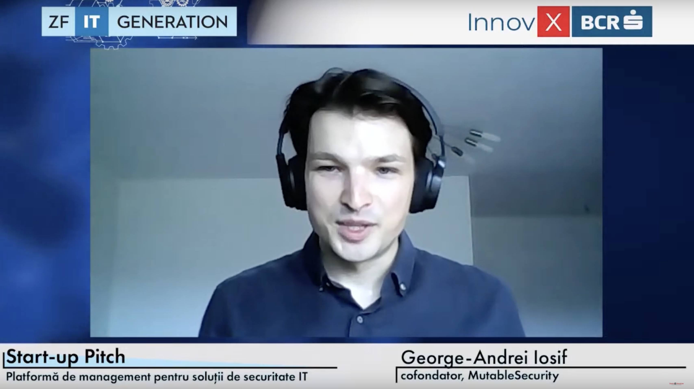
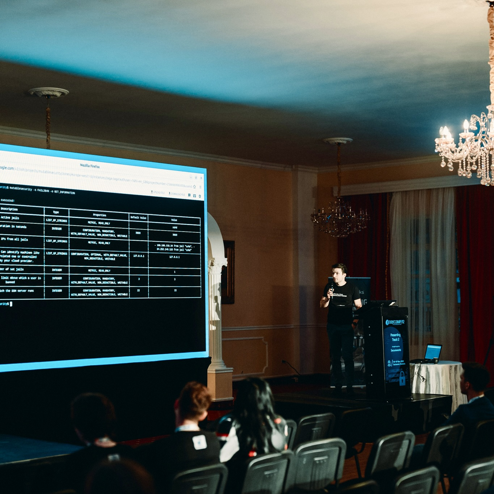
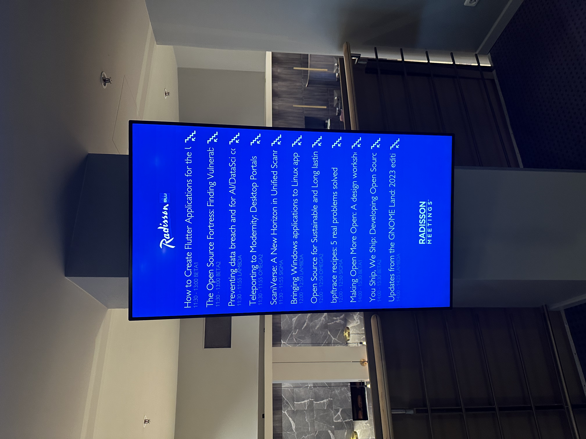
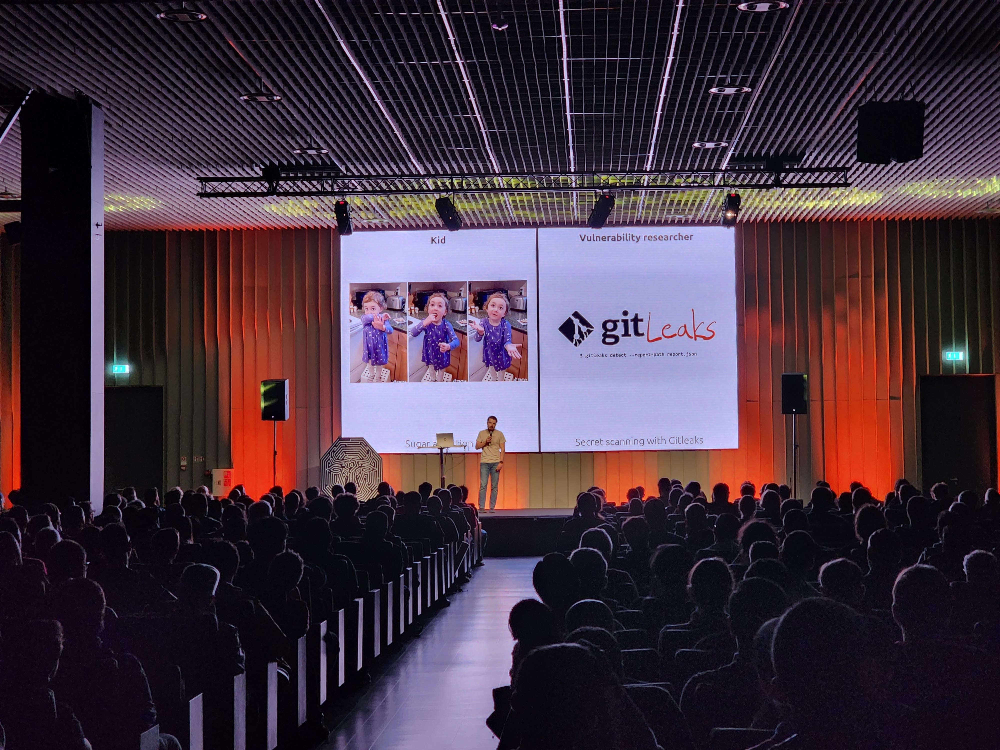
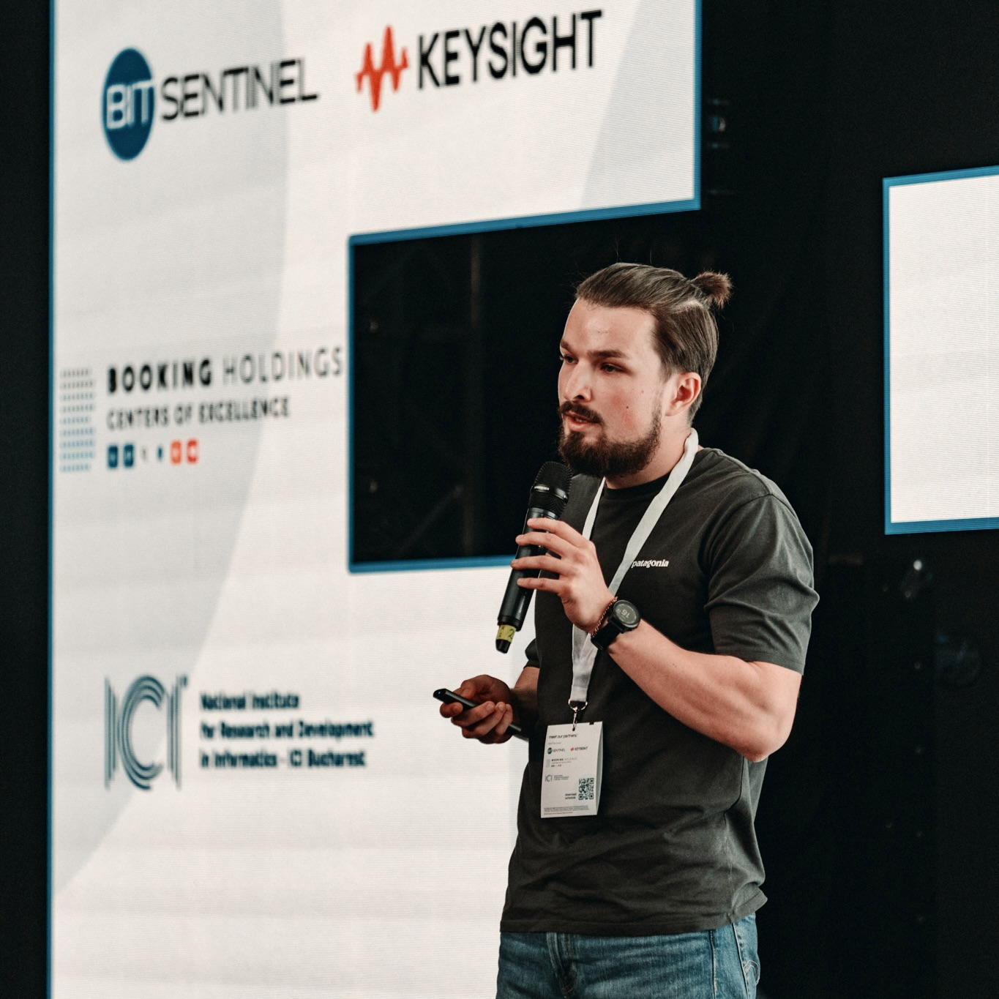
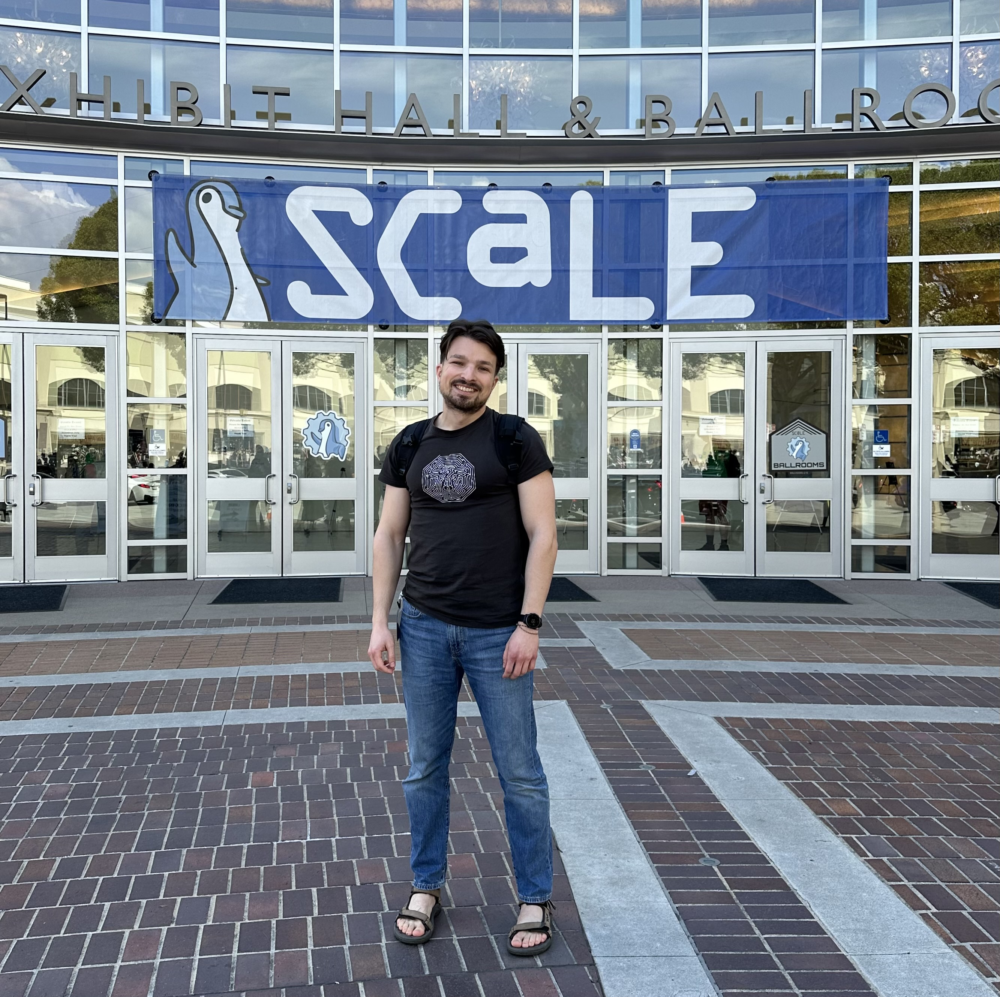
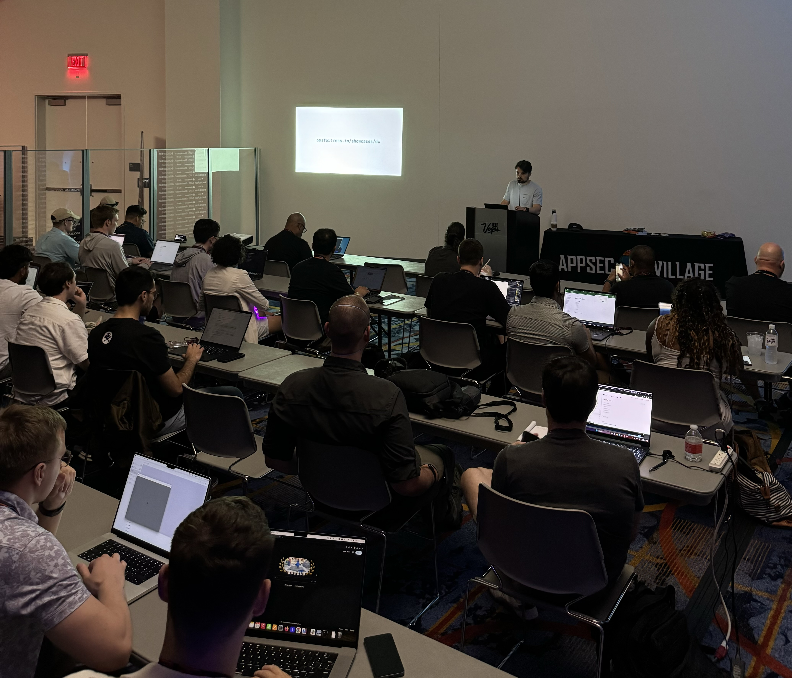
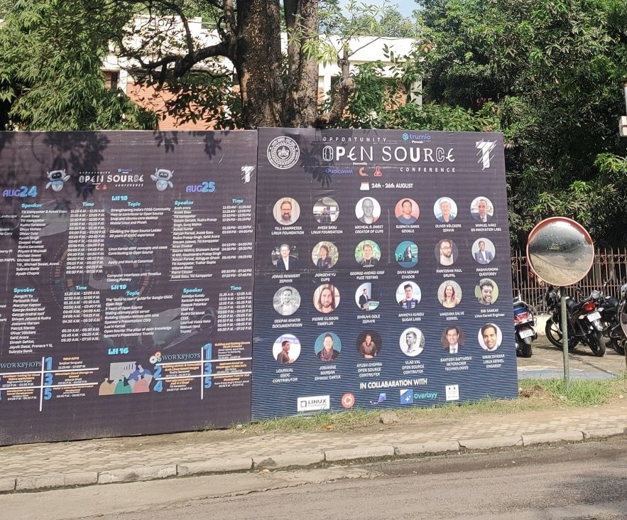
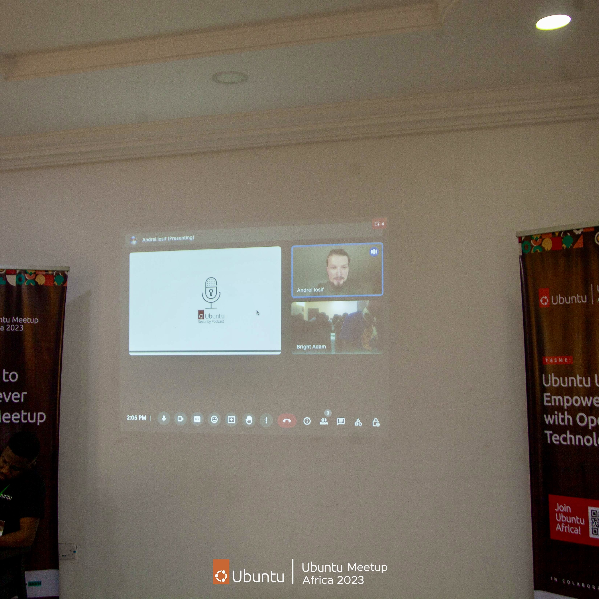

Talks
MutableSecurity
After finishing Innovation Labs in July 2022, Ziarul Financiar was kind enough to invite me to pitch and discuss (recording) about MutableSecurity in its ZF IT Generation, a program dedicated to startups.

In November of the same year, the talk "MutableSecurity: Life’s too short. Automate everything!" (listing page, slides, and recording) was accepted in DefCamp 2022, the largest cybersecurity conference in CEE. It was a 30-minute technical presentation of the open source components that MutableSecurity published.

The Open Source Fortress: Finding Vulnerabilities in Your Codebase Using Open Source Tools
The autumn of 2023 found me creating The Open Source Fortress, a workshop about finding software vulnerabilities with open source tools. I initially presented the workshop (listing page and slides) for an hour and a half at the Ubuntu Summit, a community conference around Ubuntu, Linux, and open source.

Immediately after the Ubuntu Summit, I got 5 minutes to pitch (slides) the workshop during the lightning talks organised in Canonical, with all colleagues from Ubuntu Security Team and all other engineering teams.

The last speaking opportunity from 2023 was in DefCamp: a 30-minute talk called "The Open Source Fortress: Finding Vulnerabilities in Your Codebase Using Open Source Tools" (listing page and slides). It presented the main vulnerability detection techniques and tools covered in The Open Source Fortress.

March 2024 found me presenting in SCaLE 21x, the largest community-organised open-source conference in North America. The content of the presentation (listing page, recording, and slides) was similar to the one from DefCamp, but the available time was twice as much, which aided in covering a broader range of topics and providing more detailed explanations.

The workshop was revamped in the summer of 2024, when the AppSec Village from DEF CON invited me to host the workshop for 2.5 hours (listing page and slides). The highlights of the workshop update were the new vulnerabilities introduced in the Goat-like vulnerable application and wiki expert mode.

The last event in which I virtually hosted the talk was Opportunity Open Source 2024 (listing page and slides), an event organised for the students in IIT Kanpur (India).

Open source, check, security, check: A checklist for securing open source projects
In parallel with the effort to demonstrate that the barrier to entry for software security is low because of the open source tooling, I was invited to the first Ubuntu meetup in Africa (named Ubuntu Meetup/Workshop in Africa). As my talk "Open source, check, security, check: A checklist for securing open source projects" (slides) was only 15 minutes, I presented a checklist of items that the maintainers need to do to secure their open source projects.

As in the case of the presentations in The Open Source Fortress, the last time I hosted this talk was during Opportunity Open Source in August 2024 (listing page and slides).
Fuzzing in the open: Integrate your project in OSS-Fuzz for continuous fuzzing
Because of the great collaboration Jiongchi, Dongee, and I had during our Google Summer of Code collaboration, we were accepted to host a 1.5h workshop called "Fuzzing in the open: Integrate your project in OSS-Fuzz for continuous fuzzing" during Ubuntu Summit 2024 (listing page). As the title implies, it provided guidance for open source maintainers on how to integrate their projects with OSS-Fuzz, a fuzzing service run by Google. This guidance was based on insights obtained from integrating OpenPrinting's projects into OSS-Fuzz.